Configuration
Configuration
The goal of this chapter is to start instrumentig our components based on Config Admin. At this time, only the method of creating, updating and storing configuration will be introduced.
The business logic and the integration tests were developed in the last chapter. If you skipped that part, please check out the 02 - tdd branch in eclipse and import the content as maven projects.
There are many ways to add a Servlet Containers to an OSGi environment. In this tutorial, Jetty will be used with its own OSGi support. By doing that, the newest features of Jetty can be used. (Websocket, SPDY, ...).
Add the following dependencies to the pom.xml of the tests project!
<!-- Logging -->
<dependency>
<groupId>org.slf4j</groupId>
<artifactId>slf4j-simple</artifactId>
<version>1.7.7</version>
</dependency>
<dependency>
<groupId>org.apache.felix</groupId>
<artifactId>org.apache.felix.log</artifactId>
<version>1.0.1</version>
</dependency>
<dependency>
<groupId>org.everit.osgi</groupId>
<artifactId>org.everit.osgi.loglistener.slf4j</artifactId>
<version>1.0.0</version>
</dependency>
<!-- EventAdmin -->
<dependency>
<groupId>org.apache.felix</groupId>
<artifactId>org.apache.felix.eventadmin</artifactId>
<version>1.4.2</version>
</dependency>
<!-- Metatype -->
<dependency>
<groupId>org.apache.felix</groupId>
<artifactId>org.apache.felix.metatype</artifactId>
<version>1.0.10</version>
</dependency>
<!-- Configuration Admin -->
<dependency>
<groupId>org.apache.felix</groupId>
<artifactId>org.apache.felix.configadmin</artifactId>
<version>1.8.0</version>
</dependency>
<!-- Jetty -->
<dependency>
<groupId>org.eclipse.jetty.osgi</groupId>
<artifactId>jetty-osgi-boot</artifactId>
<version>9.2.3.v20140905</version>
<exclusions>
<exclusion>
<artifactId>org.eclipse.osgi.services</artifactId>
<groupId>org.eclipse.osgi</groupId>
</exclusion>
<exclusion>
<artifactId>org.eclipse.osgi</artifactId>
<groupId>org.eclipse.osgi</groupId>
</exclusion>
<exclusion>
<artifactId>jetty-annotations</artifactId>
<groupId>org.eclipse.jetty</groupId>
</exclusion>
</exclusions>
</dependency>
<dependency>
<groupId>org.eclipse.jetty.osgi</groupId>
<artifactId>jetty-httpservice</artifactId>
<version>9.2.3.v20140905</version>
</dependency>
<!-- Webconsole -->
<dependency>
<groupId>org.apache.felix</groupId>
<artifactId>org.apache.felix.webconsole</artifactId>
<version>4.2.2</version>
</dependency>
<dependency>
<groupId>commons-fileupload</groupId>
<artifactId>commons-fileupload</artifactId>
<version>1.3.1</version>
</dependency>
<dependency>
<groupId>org.everit.osgi.bundles</groupId>
<artifactId>org.everit.osgi.bundles.org.json</artifactId>
<version>1.0.0-v20140107</version>
</dependency>
Add the following snippet to the configuration of eosgi-maven-plugin in the pom.xml of the tests project!
<environment>
<id>felixtest</id>
<framework>felix</framework>
<systemProperties>
<jetty.port>$${ if (System.getenv("EOSGI_STOP_AFTER_TESTS").equals("true")) "0"; else "4848"; }</jetty.port>
<jetty.home.bundle>org.eclipse.jetty.osgi.boot</jetty.home.bundle>
</systemProperties>
</environment>
The OSGi container must be restarted as the system properties were changed:
Stop the server by pushing CTRL+C on the console!
Run "mvn eosgi:dist" command in the root folder of the tests project!
Start the server again!
Open the following url in a new browser window: http://localhost:4848/system/console!
A pop-up window will appear that asks for credentials. Enter admin as the user name and admin as the password. You should see the website below:
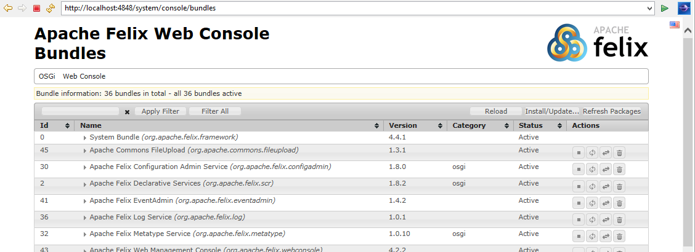During the part many dependencies were added. Those dependencies are not only necessary because of Jetty, but they will also be used by the technologies introduced in the following chapters of this tutorial.
Jetty listens on a random port if integration tests are started by maven and it listens on the port 4848 if the OSGi container is started within a console. This port is used only for the management console so it should be accessible only within the trusted network (localhost, LAN or VPN). For custom web applications a different port will be opened later.
Open the UserServiceComponent class and change the annotations of the class in the following way:
@Component(name = "org.everit.cookbook.UserService", configurationFactory = true, metatype = true
policy = ConfigurationPolicy.REQUIRE)
@Properties({ @Property(name = "service.description", propertyPrivate = false) })
@Service
Create src/main/resources source folder in the core project!
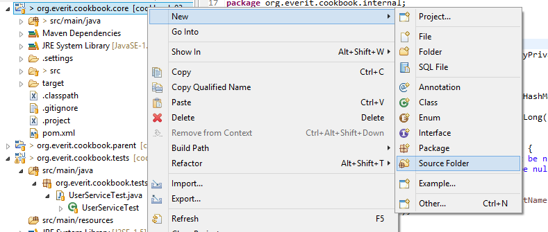 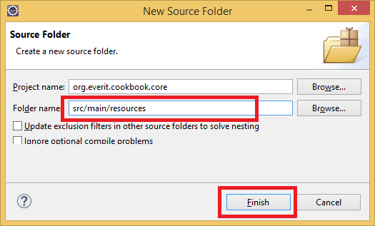Create a new file in the OSGI-INF/metatype sub-directory src/main/resources source folder with the metatype.properties name!
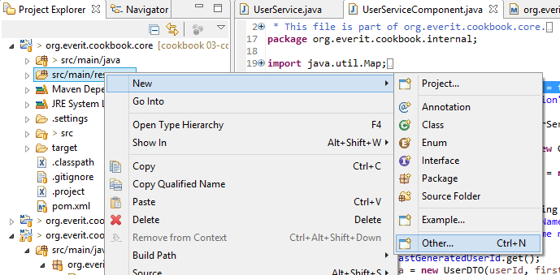 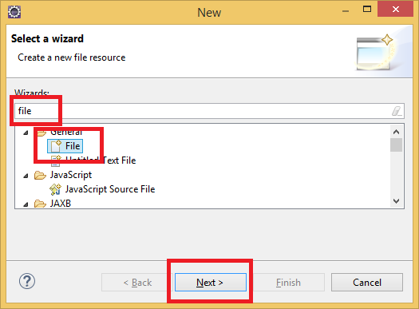 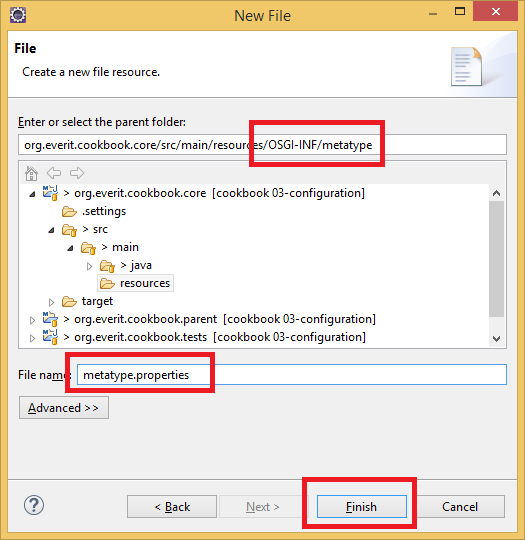Add the following content to the newly created properties file:
org.everit.cookbook.UserService.name=Everit Cookbook User Service org.everit.cookbook.UserService.description=Managing user data service.description.name=Service Description service.description.description=Descriptive name of the service
Update the core project (right click on the project, Maven / Update project...)!
Deploy the core project to the OSGi container!
Open the UserServiceTest class and change the annotations of the class in the following way:
@Component(configurationFactory = true, metatype = true, policy = ConfigurationPolicy.REQUIRE)
@Properties({
@Property(name = "userService.target"),
@Property(name = "service.description", propertyPrivate = false),
@Property(name = "eosgi.testEngine", value = "junit4"),
@Property(name = "eosgi.testId", value = "UserServiceTest")
})
@Service(UserServiceTest.class)
Create src/main/resources source folder in the tests project!
Create a new file in the OSGI-INF/metatype sub-directory src/main/resources source folder with the metatype.properties name!
Add the following content to the newly created properties file:
org.everit.cookbook.tests.UserServiceTest.name=Everit Cookbook User Service Test org.everit.cookbook.tests.UserServiceTest.description=Testing User Service userService.target.name=User Service Target userService.target.description=OSGi service filter of the User Service reference eosgi.testId.name=Test Id eosgi.testId.description=Unique id of User Service Test eosgi.testEngine.name=Test Engine eosgi.testEngine.description=Engine name of the tests (should not be changed) service.description.name=Service Description service.description.description=Descriptive name of the service
Update the tests project (right click on the project, Maven / Update project...)!
Deploy the tests project to the OSGi container!
Both components were changed in the way that they need at least one configuration entry to be instantiated.
Open the Configuration page of the WebConsole in a browser with the following url: http://localhost:4848/system/console/configMgr
Select the Everit Cookbook User Service from the list of available configurations!
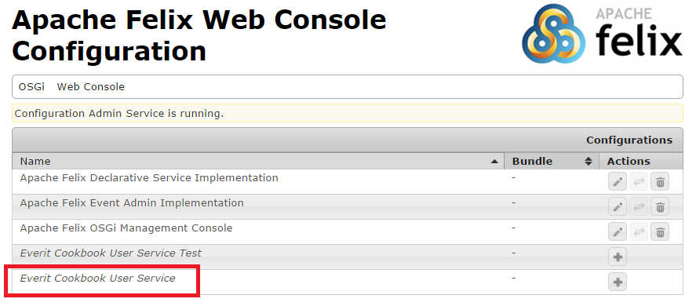On the popup window, enter some descriptive text for the Service Description attribute and save the new configuration!
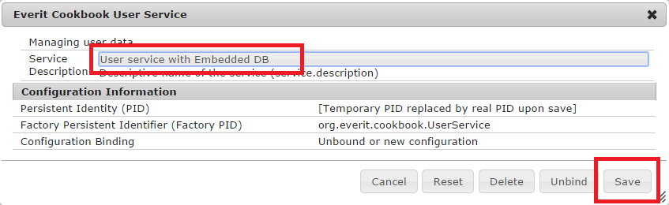Open the newly created configuration again and copy the GUID of the configuration to the clipboard!
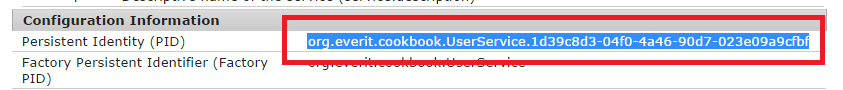Select the Everit Cookbook User Service Test from the list of available configurations!
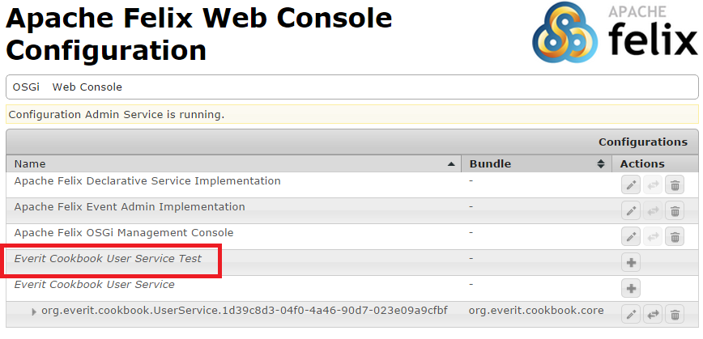Specify the User Service Target attribute in the way that it points to the previously created instance! To do that, enter an OSGi service filter that contains the service.pid of the previous configuration (it is on the clipboard)! Fill the Service Description" with some descriptive text and save the configuration!
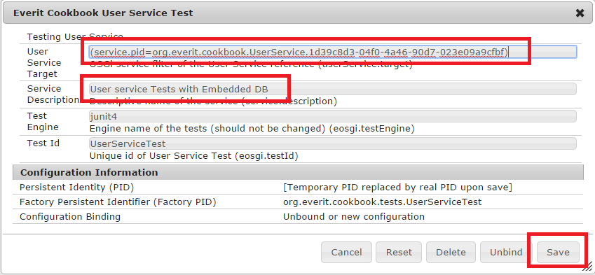In the end of this part, all tests should run automatically. You can check it in the console.
Although the configuration is persisted into the data folder of the configadmin bundle, it will be lost after the target folder is deleted. The configuration should be stored in the source folder of the project.
Open the pom.xml of the tests project and add the following system property to felixTest environment:
<felix.cm.dir>${wrapper_home}/../conf/configadmin</felix.cm.dir>Create the src/dist/conf/configadmin folder structure in the tests project!
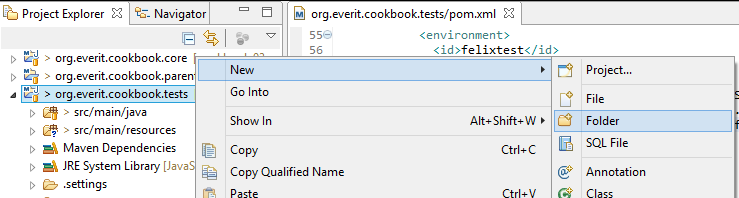 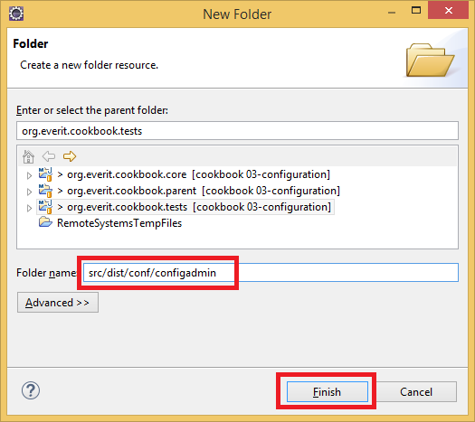Open the bundles window of WebConsole with the following url: http://localhost:4848/system/console/bundles
Find the line of the Configuration Admin Bundle and note the Id of it! On the sample screen it is 30.
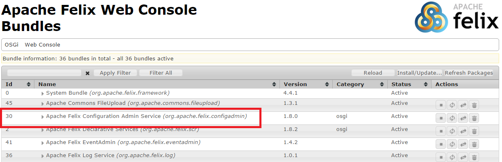Go to the target/eosgi-dist/felixtest/felix-cache/bundleXX/data/config directory of the tests project and copy its content to the src/dist/conf/configadmin directory! Please note that XX should be replaced with the id of the Configuration Admin bundle!
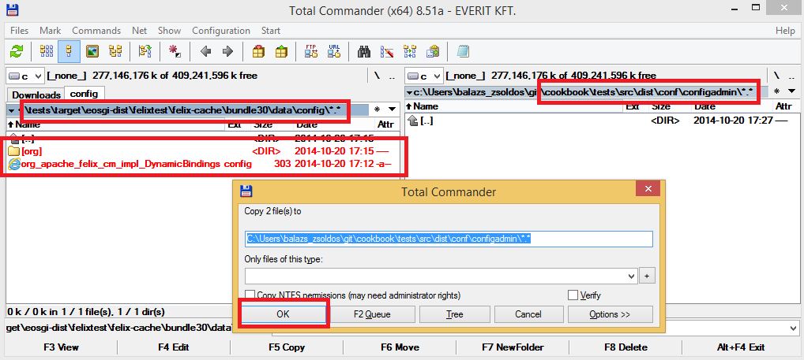Run "mvn eosgi:dist" in the root of the tests project!
As a system property has been changed, the OSGi container must be restarted.
When the configuration is changed on the Webconsole, the src/dist/conf/configadmin directory must be always overridden from target/eosgi-dist/felixtest/conf/configadmin in the future. By doing that, the configuration will be part of the source and it will survive a full compilation. Please note, that this was the last time we had to restart the server for a long time.
In the end, run mvn license:format in the root folder of the core project to add the license headers.